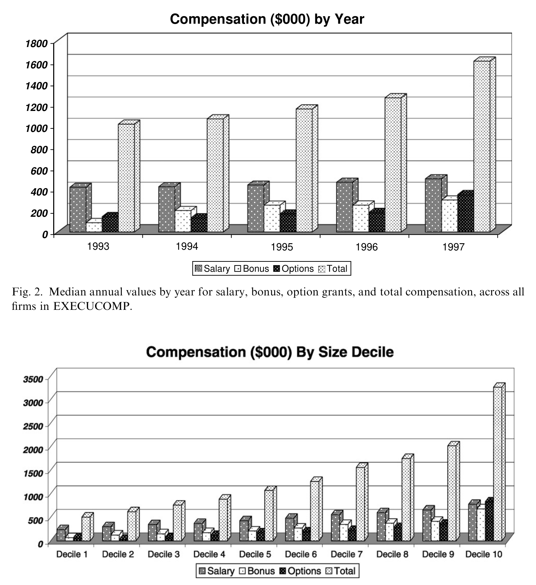
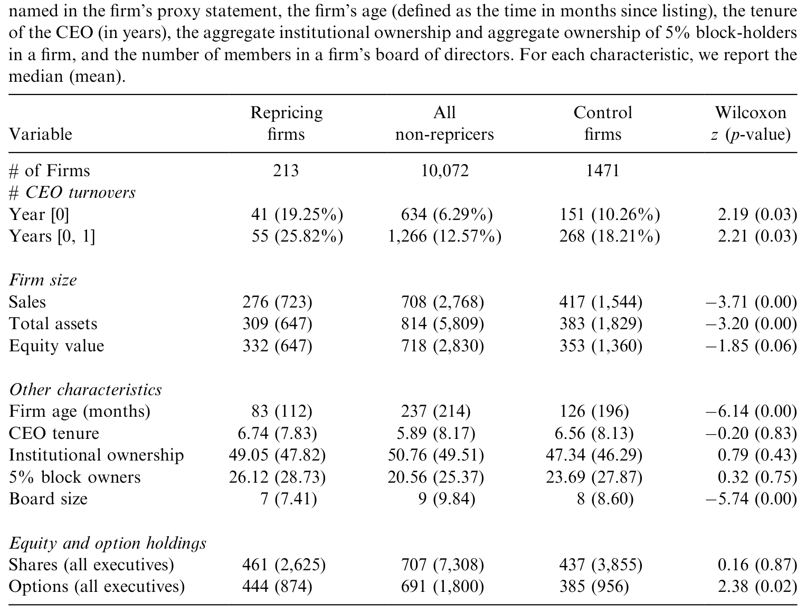
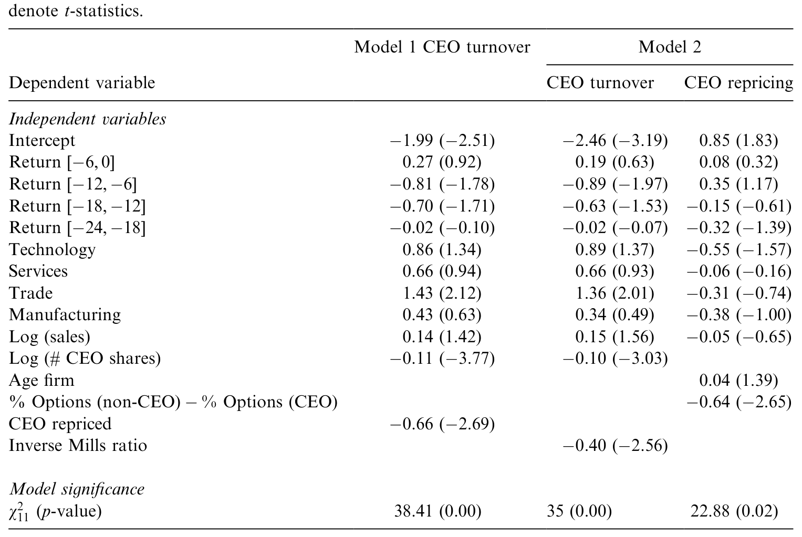
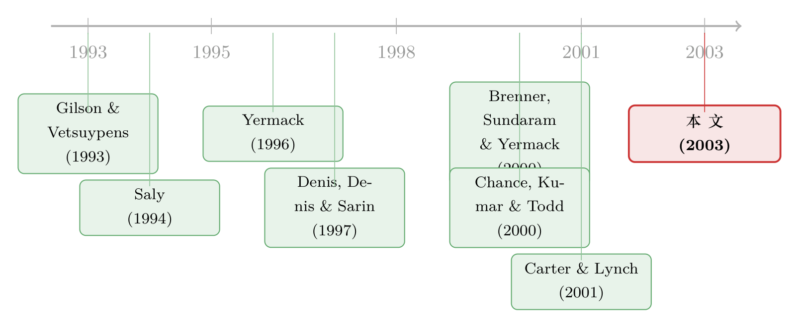

给「水下」期权重新定价，到底是老板在赖着不走，还是公司在自救？
本文读的是 Chidambaran & Prabhala (2003, Journal of Financial Economics)：被舆论骂作「管理层赖着不走」的标志的 高管股票期权重新定价 (executive stock option repricing)，在 213 个真实样本里几乎找不到「治理失灵」的证据——重新定价的公司反而 CEO 离职率异常地高，而且超过 40% 的重定价根本把 CEO 排除在外。重新定价更像是一群年轻、高速成长、突遭重击的科技公司在「修补激励」，而不是一群老油条在「自肥」。
1 一个让人血压升高的故事
先讲一个让机构投资者拍桌子的桥段。
一家公司给高管发了一大把股票期权 (executive stock options, ESOs)，行权价 (strike price) 就钉在授予日的股价上。逻辑很干净：股价涨，期权值钱，高管和股东一条心；股价跌，期权变成废纸，高管自食其果。这正是 Murphy (1998) 说的——期权在 1980、1990 年代爆炸式增长，已是高管薪酬里单笔最大的一块。它的卖点，就是把管理层的钱包和股东的钱包焊在一起。
可是，剧情有时会反转。股价跌了一大截，期权深度「水下」(out-of-the-money)，眼看就要归零。这时候董事会做了一件让人血压飙升的事：把行权价往下调 30%–40%，有时还顺手把到期日往后延。一夜之间，那些一文不值的期权又重新值钱了。
舆论炸了。1999 一年，LEXIS–NEXIS 上能搜到 50 多篇报道，绝大多数是骂的。批评者的逻辑很顺：重新定价总是跟在一段糟糕的股价表现后面——这不就是「干得差，反而发奖金」吗？更要命的是，它似乎在说一件事：这帮经理人股东根本动不了他们。股价腰斩本该是「该卷铺盖了」的信号，结果他们不但没走，还给自己把期权重新校准了一遍。于是「重新定价 = 管理层壕沟自固 (managerial entrenchment) = 治理失灵」几乎成了一条公理。连 FASB 都看不下去了：1998 年它决定收紧会计处理，要求重定价的期权改用「可变法」入账，把成本明明白白计进损益表，而不是藏在脚注里。
这套指控听上去天衣无缝。但 Chidambaran 和 Prabhala 想问一个朴素的问题：它是真的吗？
2 如果「壕沟假说」是对的，数据该长什么样？
科学的好处在于，一个听上去很顺的故事，往往能被逼出一个可证伪的预测。
壕沟假说 (entrenchment hypothesis) 的核心是：重新定价的公司，管理层换不动。那么它必然预测一件事——重定价公司的高管离职率应该异常地低。如果一群人能在股价崩盘后还把自己的期权重新定价，他们当然也能保住自己的位子。
于是真正关键的一步，不是去问「重新定价合不合理」，而是去数一数：这些公司的 CEO，后来到底走没走？
这就是全文的中枢。作者把舆论的道德判断，翻译成了一个干净的、可以拿数据打的赌。
3 数据：把 213 次重新定价摆上台面
赌注要押在足够大的样本上。作者用的是 Standard & Poor's 的 EXECUCOMP 数据库（1998 版），覆盖 1,836 家公司、51,555 位高管、1992–1997 六个财年。数据库标出了 864 位被重定价的高管，归并到公司层面是 240 次重定价事件。
作者像 Brenner, Sundaram & Yermack (2000) 那样，逐一去翻 proxy statement、10-K 和年报核对，剔掉 27 个有问题的（14 个是 EXECUCOMP 把跨年度事件错配了年份，7 个其实是并购/分拆/子公司重授，还有归属于普通员工而非高管的，等等），最后落定 213 次重新定价。这个样本明显大于前人：Brenner et al. (2000) 只有 133 次，Chance, Kumar & Todd (2000) 更只有 53 次。
样本一摆开，「典型重定价公司」的肖像就浮出来了：
- 行业极度扎堆。 计算机与电子元件、软件与高科技、生物科技三个行业，吃下了 213 次里的 80 次，约
37.5%；再加上批发零售（trade）和服务业，技术+贸易+服务三块合起来占了三分之二以上。而公用事业、采矿这类重工业里，重新定价近乎绝迹。 - 先经历一场急跌。 重定价公司在重定价财年之前两年开始跑输大盘；再往前则看不出差异。也就是说，冲击是「突如其来」的，不是「积重难返」的。
- 盈利与增长同步塌方。 这一点最关键，下一节细讲。
4 不是慢性病，是一次「急性休克」
要判断重新定价是「给烂公司续命」还是「给好公司急救」，得看经营基本面是怎么变的。
作者沿用 Barber & Lyon (1996) 的做法，用 行业调整后的 EBITDA 比率 (abnormal EBITDA ratio)——即息税折旧前利润 ÷ 资产平均账面价值，再减去同行业同年中位数——并且和 Barber & Lyon 一样，看中位数而非均值（均值容易被异常值带偏）。
结果像一条断崖：
- 在重定价前两年（year −2），重定价公司的 abnormal EBITDA 中位数是
−0.52%，和零没有差别（Wilcoxonz = −0.44，p = 0.65）——和同行一样健康。 - 到了重定价当年（year 0），abnormal EBITDA 中位数砸到
−6.71%，在 1% 水平显著（Wilcoxonz = −7.77，p = 0.00），而且之后两年都没有回弹。
这个下滑在经济意义上很重：每 $100 的资产账面值，税前现金流少了 $6 多，相当于重定价前 EBITDA 的四分之一到三分之一。
销售增长讲的是同一个故事。重定价公司在 year −2 还在狂奔——原始销售增速中位数 28%，行业调整后 13.78%，都在 1% 显著。可到了 year 0，原始增速只剩 3.6%，行业调整后变成 −7.82%：增长直接熄火，掉到行业线以下。
把这两组数字放在一起，「典型重定价公司」的画像就清楚了：一家年轻、原本高速成长的公司，突然挨了一记又深又急、而且基本不可逆的增长与盈利冲击。它不是一具拖了很久的烂摊子，而是一台高速行驶中突然爆胎的车。
那这种公司的薪酬是不是哪里特别可疑？作者把重定价公司的薪酬水平和「规模匹配的同行」摆在一起比。结论出人意料地平淡：重定价那一笔授予本身确实在经济意义上很大（相对总薪酬、相对上一年的期权授予都很显著，也显著高于匹配同行的期权授予），但除此之外，薪酬水平和薪酬变动都没什么异常——重定价公司的高管并没有拿着比同行更肥的合同。

Figure 3: Median annual values by size decile for salary, bonus, option grants, and total compensation
换句话说，重新定价是一次「显著的薪酬事件」，却不是「异常的薪酬安排」。如果你想从工资条里找到「自肥」的指纹，这里没有。
5 识别策略：和一群「看不见的对照组」打交道
到这里要插一句方法论，因为这是本文一个被低估的贡献。
想说清「在同样的股价暴跌下，为什么有的公司重定价、有的不」，你需要一个对照组：那些同样深度水下、却没有重新定价的公司。麻烦在于——这个对照组在数据里从来没被明确标出来过。你只知道谁重定价了，却无从精确地知道「谁本来也够格重定价但忍住了」。
作者的处理分两层。其一，用一个临时的、明说是 ad hoc 的规则圈定控制样本：月度区间 [−24, −6] 内回报低于 −15%，或 [−6, 0] 内低于 −30% 的公司。前者代表「相对持久的价格冲击」，后者代表「近期遭重击」。其二，他们坦承这个控制样本必然两头都有误差（既会误纳、也会漏掉），于是借助统计方法（文中引用 Heckman (1979) 的样本选择框架与 Greene (1993)）来处理「对照组只是被不完美地观测到」这件事——用过去回报、期权授予价这些指向潜在对照公司的变量做工具，承认工具不完美，再产出一个重定价公司与（其实从未被直接观测到的）对照公司之间的统计比较。
这是一篇 2003 年的论文，识别策略不是今天流行的 DiD/IV/RDD 那套干净的准实验。它的「因果」更接近一组条件相关性 + 选择修正：作者很诚实地把控制样本的构造说成 ad hoc，并用计量方法去缓解、而非彻底消除选择偏误。读它的正确姿势，是把结论当作「在尽力控制可观测特征后的稳健模式」，而不是某个外生冲击下的处理效应。
横截面跑下来，作者推翻了「规模是唯一解释变量」的旧结论（Brenner et al. 2000；Chance et al. 2000 都只找到规模）。新发现是：更年轻、增长更快、属于技术/贸易/服务业、董事会更小的公司，更可能重新定价。而且——这是对壕沟假说的第一记反驳——作者找不到证据表明重定价公司有「在位更久的经理人、更分散的股权、或特别低的机构持股」。这些本该是「治理孱弱」的标志，结果都没出现。

Table 6: presents cross-sectional data for repricers, all non-repricers, and control
如表 6 所示，把重定价公司、全部非重定价公司、以及匹配的控制公司三栏并排，重定价公司在「年龄小、增长快、董事会小」这些维度上系统性地不同，但在「治理孱弱」的那些维度上并不突出。
值得一提的是「董事会更小」这一条。Yermack (1996) 的经典结论是，董事会小的公司估值反而更高——小董事会通常被读作更有效的治理，而非更差。所以「小董事会更爱重定价」非但不支持壕沟假说，反而暗示重定价更多发生在治理有效的公司里。
6 反转：重新定价的公司，CEO 走得更勤
现在回到那个中枢赌注。壕沟假说预测重定价公司的高管离职率异常低。数据怎么说？
恰恰相反。 重定价公司的 CEO 离职率异常地高。作者用一个 probit 模型估计 CEO 离职的发生概率（如表 9），在控制了股价表现等因素之后，「重定价」这件事本身仍然伴随着更高的离职概率。完全看不到「这帮人赖着动不了」的影子——真要说的话，重定价的公司里，老板反而更容易下台。

Table 9: reports probit estimates in which the incidence of CEO turnover in
如表 9 所示，重定价指标在 CEO 离职的 probit 回归中带着正号，方向与壕沟假说预测的「离职率应当偏低」正好相反。
这就是全文的「反转」时刻。舆论说重新定价是「股东炒不掉经理人」的铁证，可数据里，重定价公司的 CEO 比一般公司更可能被换掉。一个被讲了无数遍的道德故事，被一列离职率数字直接戳穿。
那为什么会这样？作者给的图景是连贯的：一家年轻高成长公司突遭不可逆的重击，董事会一边在认真考虑（并且确实在执行）换帅，一边又面临一个现实问题——留下来的、要带公司走出泥潭的关键高管，手里的期权已经全成废纸，激励没了。重新定价，恰恰是在「换掉该换的人」之后，修复留任者的激励。这正是硅谷公司（Symantec、Apple 都明说过）一直挂在嘴边的理由：不重定价，人才留不住。重定价不是壕沟的产物，而是 Hall & Murphy (2000) 所说的「深度水下的期权不再提供任何有意义的激励，因此必须下调行权价」的实践。
7 最后一块拼图：超过 40% 的重定价，CEO 根本不在名单上
如果还有人嘴硬，说「那也是 CEO 在给自己安排」，本文最后甩出一个很难反驳的事实。
在全部 213 次重定价里，超过 40%（86 次）压根没把 CEO 列进被重定价的高管名单。作者管这类叫「非 CEO 重定价」(non-CEO repricers)，而且从 1992 年的仅 1 例，一路涨到 1996 年的 22 例，越来越常见。
更妙的是这些公司内部的激励结构。在「非 CEO 重定价」的公司里，存在一种鲜明的失衡：CEO 手里期权少、直接持股多；而非 CEO 高管手里期权多、持股少。于是一场负向股价冲击，对非 CEO 高管激励的削弱，远大于对 CEO 的削弱。这时重新定价的作用一目了然——它在修补管理层内部的激励失衡，给那些被冲击打懵、但公司还指望他们干活的下属重新装上激励，而不是给那个本来就持股不少、利益没那么受损的 CEO 发福利。
一个连 CEO 都不参与的重定价，怎么可能是 CEO「壕沟自固」的工具？这块拼图，几乎把壕沟假说的最后退路也堵死了。
（关于期权、换帅威胁与短视之间的纠缠，可参见《归属期越长，越能治短视吗？——一个被「换帅威胁」掰弯的常识》；关于 CEO 实际如何看待和行权自己手里的期权，可参见《同一份期权，老板算的账和股东算的账为什么不一样？》。）
8 文献脉络
把这条线索摆顺，故事会更清楚。
最早的踪迹来自财务困境的研究：Gilson & Vetsuypens (1993) 在一小批申请破产的困境公司里记录了重定价的零星实例。紧接着是理论建模的一波：Saly (1994) 在下行市场里给重定价的激励效应建模；Acharya, John & Sundaram (2000) 把它放进契约重谈的最优性框架；Brenner, Sundaram & Yermack (2000) 则用「障碍期权」的类比去给带重定价特征的期权估值。
然后是第一波实证。Brenner et al. (2000) 和 Chance, Kumar & Todd (2000) 用 EXECUCOMP 与 LEXIS–NEXIS 检索做横截面分析，得到一个略显单薄的结论：几乎只有公司规模能解释谁重定价——典型重定价公司，相对 S&P 500 而言就是「小」。

本文 (Chidambaran & Prabhala, 2003) 站在这一波实证之后，做了三件前人没做的事：其一，用更大的样本（213 vs. 133 vs. 53）和处理「不可观测对照组」的计量方法，证明除了规模，年龄、增长、行业、董事会规模都重要；其二，把这条线接到了高管更替的文献上——Denis, Denis & Sarin (1997) 关于股权结构与高管更替的研究——并用 CEO 离职率直接检验、并推翻了壕沟假说；其三，借 Yermack (1996) 的「小董事会更有效」把「小董事会更爱重定价」读成「治理有效」而非「治理失灵」。几乎同期，Carter & Lynch (2000, 2001) 从会计与 FASB 规则变化的角度切入同一现象，与本文形成互补。
9 评论与延伸（Q&A + 研究方向）
(a) 几个可能的疑问
Q：「重定价公司 CEO 离职率高」就能洗清壕沟嫌疑吗？会不会是『换了个 CEO，新官上任先给自己（和团队）重定价』？
这是最该追问的一点。本文的反驳力来自两处：一是离职率异常高这个方向，本身就和壕沟假说「离职率应当偏低」的预测正面冲突；二是超过 40% 的重定价把 CEO 排除在外，且这些公司里 CEO 持股多、期权少，受冲击小。两条合起来，很难再把重定价讲成 CEO 的自利工具。但「离职与重定价的时序谁先谁后、是不是同一拨人安排的」，本文并没有用事件时间精确切开——这是它留下的口子。
Q：控制样本是 ad hoc 圈出来的，结论会不会是这个阈值『凑』出来的？
作者自己反复强调控制样本「probably imperfect, with errors of both inclusion and exclusion」，并用 Heckman 式的选择修正去缓解。诚实归诚实，
−15%/−30%这些阈值确实是人为设定，稳健性依赖于「换个合理阈值结论不变」。把它当作准实验级别的因果证据是过度解读；当作「控制可观测特征后的稳健模式」更稳妥。
Q：为什么偏偏是科技、贸易、服务业，而不是公用事业？
因为这三类行业恰好同时满足「年轻 + 高成长 + 易遭突发不可逆冲击 + 高度依赖期权留人」。重工业现金流稳、期权占薪酬比重低，既不容易急性休克，也没那么需要靠重定价留住关键人才。行业分布本身就是「自救说」而非「自肥说」的旁证。
Q：重定价毕竟在股价跌后增加了高管财富，这难道不是『为表现差买单』？
表面看是。但本文区分了「水平」和「边际」：重定价那笔授予在规模上确实可观，可重定价公司的整体薪酬水平、薪酬变动都和匹配同行无异。也就是说，公司并没有借机把高管总报酬抬上去，而是把已经失效的激励工具重新校准。Hall & Murphy (2000) 的论点正在于此：深度水下的期权激励为零，下调行权价是为了恢复激励斜率，而非发福利。
Q：和 Carter & Lynch 那条「会计」线相比，本文的角度差在哪？
Carter & Lynch (2000, 2001) 关心的是 FASB 把重定价改成「可变法」入账后，公司行为如何改变——是会计准则→企业决策的因果。本文关心的是重定价本身反映了治理好坏还是经营冲击——是现象→解释的甄别。两者互补：一个问「规则怎么改变了重定价」，一个问「重定价到底是什么」。
Q：小董事会更爱重定价，到底说明治理更好还是更差？
本文借 Yermack (1996) 把它读作「更好」——小董事会通常更有效、决策更快。但这条解读不是铁律：小董事会也可能意味着 CEO 影响力更大。作者没有用董事会独立性等更细的治理变量去交叉验证这一点，所以「小董事会 = 有效治理」在这里更像一个有依据的倾向性判断，而非被钉死的结论。
(b) 几个可能的研究问题与提案
1. 重定价对债权人是好消息还是坏消息？
【经济故事】重定价恢复了高管的股权激励，可能加剧「风险转移」(risk-shifting)——把高管推向更激进、对股东有利但对债权人不利的项目。一家刚遭重击、信用恶化的公司给高管重定价，债券利差会怎么反应？这是把「激励修复」的故事接到信用市场的一道自然延伸。 【可行性】中。需要把 EXECUCOMP 的重定价事件与 TRACE/公司债二级市场数据、信用评级匹配，做重定价公告前后的债券异常回报事件研究。难点是重定价披露的时点常滞后（年报里才出现），事件窗口不干净；识别需要谨慎处理「重定价」与「同期基本面恶化」的混淆。
2. 外资持有人会不会系统性地反对重定价？
【经济故事】本文写作年代，主动型机构投资者（如 SWIB）是重定价最激烈的批评者。一个自然的问题是：不同类型的持有人——尤其是跨境/外资机构——对重定价的投票与持仓反应是否不同？外资常被认为更看重治理标准。 【可行性】中。需要 13F/国际持仓数据 + 代理投票记录（ISS/股东提案数据）。识别策略可借「股东提案要求重定价须经股东批准」的事件，比较外资持股高低的公司在提案通过率与后续重定价频率上的差异。诚实地说，把「外资」从「机构」里干净地剥出来、并处理持股内生性，是这条线的主要障碍。
3. 2003 年之后，会计准则收紧（FASB 可变法）如何改变了重定价的人群构成？
【经济故事】FASB 在 1998 年后要求重定价计入损益表，重定价成本不再「隐形」。如果重定价主要是经营自救（本文观点），收紧会计应当主要抬高成本、压低频率，但不改变「谁来重定价」；如果它本是治理失灵的产物，收紧后留下的可能是治理更差、更不在乎报表的公司。比较准则前后重定价公司的特征，能反向检验本文的解释。 【可行性】高。EXECUCOMP 时间跨度足够，准则变化提供了一个相对清晰的时间断点，可做断点/前后对比。Carter & Lynch 已铺了路，扩展到「人群构成」是可行的增量。
4. 把「非 CEO 重定价」当成内部激励失衡的探针。
【经济故事】本文最有意思的发现是：非 CEO 重定价公司里，CEO 持股多期权少、下属期权多持股少。这暗示重定价是修补管理层内部的激励失衡。能不能反过来用「内部持股/期权结构的失衡度」去预测哪种高管会被重定价、以及重定价后团队的留存率？ 【可行性】中高。EXECUCOMP 给出 CEO 与其他高管的持股、期权数，可构造「失衡指标」，再预测重定价是否排除 CEO、以及非 CEO 高管的后续离职。识别上的难点是「失衡」本身也内生于公司类型，需要行业×年份固定效应来吸收。
10 我的判断
这篇论文的贡献，不在于某个惊艳的计量技巧，而在于它把一个被舆论判了死刑的现象重新审了一遍，并且赢了。它做对了三件事：把「壕沟」这种道德指控翻译成可证伪的离职率预测；用足够大的样本推翻「规模是唯一解释」的旧共识；并用「40% 的重定价不含 CEO」这个几乎无法反驳的事实，给「自肥说」钉上棺材板。读完你会相信：重定价的主旋律是年轻高成长公司遭遇急性休克后的激励自救，而不是老油条的壕沟工程。
对识别的担忧也要说清楚。它不是准实验，控制样本是 ad hoc 圈定、再做选择修正的；「重定价→高离职率」是条件相关而非外生冲击下的处理效应；时序上「换帅与重定价孰先孰后」没有被精确切开。所以它最稳的结论其实是否定性的——「找不到壕沟/治理失灵的证据」——这比正面断言「重定价是好的」要扎实得多，作者的措辞也确实克制。
后续我最想看到的，是把这条线接到信用市场和持有人结构上：重定价对债权人意味着什么、什么样的股东会系统性地反对它、以及会计准则收紧如何筛选了重定价的人群。本文把「重定价不是壕沟」这件事讲透了；下一步该问的是「那它到底重新分配了谁的钱、又改变了谁的风险」。
（顺带一提，「换掉 CEO 之后公司是真的变好了，还是只是运气回来了」是个更老的难题，可参见《炒掉一个 CEO 之后，公司真的变好了吗——还是只是「运气回来了」》。）
参考文献
Acharya, V., John, K., Sundaram, R. (2000). Contract renegotiation and the optimality of resetting executive stock options. Journal of Financial Economics 57, 65–101.
Barber, B.M., Lyon, J.D. (1996). Detecting abnormal operating performance: the empirical power and specification of test statistics. Journal of Financial Economics 41, 359–399.
Brenner, M., Sundaram, R.K., Yermack, D. (2000). Altering the terms of executive stock options. Journal of Financial Economics 57, 103–128.
Carter, M.E., Lynch, L.J. (2001). An examination of executive stock option repricing. Journal of Financial Economics 61, 207–225.
Chance, D.M., Kumar, R., Todd, R.B. (2000). The 'repricing' of executive stock options. Journal of Financial Economics 57, 129–154.
Chidambaran, N.K., Prabhala, N.R. (2003). Executive stock option repricing, internal governance mechanisms, and management turnover. Journal of Financial Economics 69, 153–189.
Denis, D.J., Denis, D.K., Sarin, A. (1997). Ownership structure and top executive turnover. Journal of Financial Economics 45, 193–221.
Gilson, S.C., Vetsuypens, M.R. (1993). CEO compensation in financially distressed firms: an empirical analysis. Journal of Finance 48, 425–458.
Hall, B.J., Murphy, K.J. (2000). Optimal exercise prices for executive stock options. Working paper, NBER, Cambridge, MA.
Heckman, J.J. (1979). Sample selection bias as a specification error. Econometrica 47, 153–161.
Murphy, K.J. (1998). Executive compensation. Working paper, University of Southern California, Los Angeles, CA.
Saly, P.J. (1994). Repricing of executive stock options in a down market. Journal of Accounting and Economics 18, 325–356.
Yermack, D. (1996). Higher market valuation of companies with a small board of directors. Journal of Financial Economics 40, 185–211.